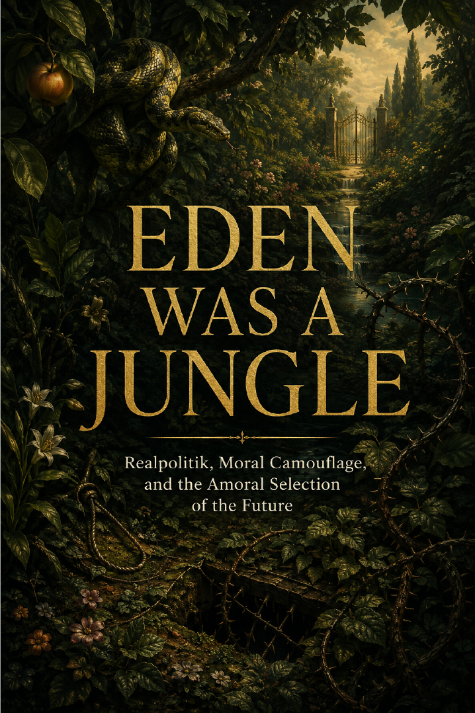

Power, Institutions & Society · Axiologic Research Editions
Eden Was a Jungle
Ecological Moral Cosmology and the Argument for Selective Stewardship of the Future
Begin with the tree within reach and follow a challenge to paradise stories that protect one valley by forgetting the forest beyond its walls.
The tree and the jungle
Human moral attention is finite. We attach to nearby faces, places, and losses, then struggle to translate that care across distance, species, time, and systems. The book begins from this constraint rather than treating concern for the whole world as an effortless moral upgrade.
The result is a moral ecology: every protection has a boundary, every boundary affects what remains outside it, and stewardship must account for the institutions that decide whose vulnerability becomes visible.
Against easy paradise
Eden is often imagined as a refuge from predation, but refuge can shift danger elsewhere. The book follows death, territory, species, inheritance, and power through that uncomfortable fact, resisting both the fantasy of harmless control and the fatalism that turns life’s conflicts into permission for indifference.
A garden is never innocent if it cannot see the world made outside its wall.
Selective stewardship
The argument does not propose omniscient management. It asks for humility about what people can know, responsibility for foreseeable consequences, and institutions capable of revising choices as effects become clearer. Care becomes credible when it protects without pretending to abolish the larger ecology of costs.